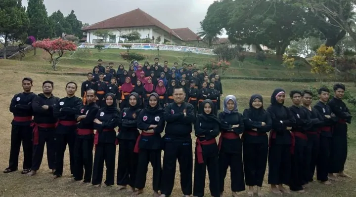
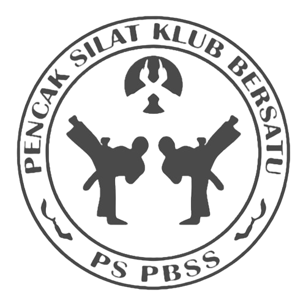

Tahun 1995–1996 (Awal Mula): Pencak silat diperkenalkan sebagai ekstrakurikuler di SMAN 3 Kuningan oleh Drs. Anwar Budiman, M.Pd. (Guru PMP & Wasit/Juri Lisensi Jabar) untuk melestarikan budaya bangsa. Era Pembinaan Iyan Irwandi, S.IP: Tongkat estafet kepelatihan diberikan kepada Iyan Irwandi, S.IP. Di bawah bimbingannya, pembinaan generasi muda berjalan konsisten hingga beliau meraih predikat Pelatih Terbaik di berbagai ajang. Tahun 2015 (Pembentukan Klub): Atas saran Disdikpora Kuningan, didirikanlah Paguyuban Barudak Silat SMANTIKA (PBSS) sebagai klub olahraga prestasi pelajar resmi. Ekspansi & Perubahan Nama: Seiring meluasnya anggota ke berbagai sekolah dan perguruan tinggi di luar Kuningan, nama PBSS berubah menjadi Paguyuban Barudak Silat Sekolah. Masa Kejayaan Prestasi: PBSS berhasil menyabet berbagai gelar bergengsi, termasuk Juara Umum I Nasional, medali perunggu Porda Jabar 2018, dan Juara 1 Nasional O2SN 2018. 3 Mei 2019 (Menjadi Perguruan): Berkat penyebaran anggota yang masif dan dorongan para senior, resmi berdiri Perguruan Silat PBSS Pencak Silat Klub Bersatu yang dipimpin langsung oleh Iyan Irwandi, S.IP.

Melambangkan kita berada dalam lingkaran NKRI yang berlandaskan PANCASILA dan UUD 1945
MElambangkan ciri khas senjata Jawa Barat karena pbss didirikan di kuningan Jawa Barat
Melambangkan olahraga pencak silat untuk melestarikan budaya bangsa serta menjaga perstauan dan kesatuan
MElambangkan Ikatan Pencak Silat Indonesia (IPSI)
Melambangkan nama perguruan silat yang dicetuskan dari Paguyuban Barudak Silat Sekolah
Melambangkan kesucian seorang pesilat
Melambangkan keberanian pesilat dalam membela kebenaran dan keadilan
Melambangkan ketabahan pesilat dalam menjalani kehidupan
